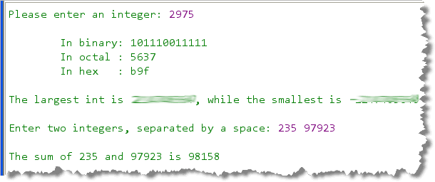
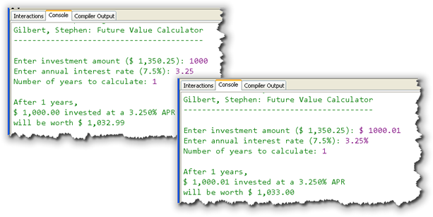

This week you'll continue working with
IPO (input, processing and output) assignments. However,
this week the processing will be more complex (since you'll be using
functions from the Math class), and the input and
output will also be more complex, since you'll be parsing
String
input and formatting the output. You'll also do
a little bit with applet graphics.
Here's the list of things you should do this week.
-
Javadocs & Parsing—IntegersAndStrings:
Write a standard console program named IntegersAndStrings.
Place it in the Chapter04 folder, since that's where the test
programs are located. Here are the program's requirements:
- Ask the user to enter an integer and then read and
store the results in a variable. Use the
ScannernextInt()method. - Use the methods in the
Integerclass to print the value of the variable in binary, octal and hexadecimal. You'll need to look them up the appropriate methods in the Javadocs. - Print the maximum and minimum integer values by using the
constants defined in the
Integerclass. - Now, ask the user to enter two integers.
Read and store the input in a pair of
Stringvariables, using thenext()method. Then, convert theStrings toints, add them together and print the results. Use concatenation, but do not format the output numbers.
Here's what your program should look like as it runs. Make sure your program has exactly the same lines of output. (The middle three lines begin with a TAB escape sequence.):

Once you have created the program, compile it and then Check your results. Keep trying until you get a perfect score. If you have difficulty, you'll find help on the Solutions page. - Ask the user to enter an integer and then read and
store the results in a variable. Use the
-
Parsing & Formatting—SalarySurvey:
Write a standard console program named SalarySurvey.
Place it in the Chapter04 folder, since that's where the test
programs are located. Here are the program's requirements:
- Ask the user to enter their first name and desired yearly salary, separated by a space.
- Use the
Scanner'snext()method to read the input into twoStringvariables. - Use the appropriate parsing method to convert the salary
into a
doubleand store it in adoublevariable. - Use
printf()to display the result like this:Name: Steve Desired salary: $ 1,275,315.75 ----+----|----+----|----+----|----+----|----+----|
- You can assume that the user will only enter valid input
for the salary value. The spacing should be the same
for amounts up to 9 million. Here's another example:
Name: BillyG Desired salary: $ 1.00 ----+----|----+----|----+----|----+----|----+----|
Once you have created the program, compile it and then Check your results. Keep trying until you get a perfect score. If you have difficulty, you'll find help on the Solutions page.
-
Formatted Output—ProduceBill:
Create a new standard console application named ProduceBill.
Place it in the Chapter04 folder, since that's where the test
programs are located.
- Prompt the user to enter weight and price
(in that order).
Use a
Scannerto initialize the variables. - Calculate the
totalPriceusingweightandpriceas shown below. - Use output formatting to produce results like this:
Unit Price: $4.25 per pound Weight: 2.56 pounds TOTAL: $10.89
- There are 4 spaces at the beginning of each line of output. These are not TAB characters.
- The labels are left-aligned in a field 11 wide.
- The values are right-aligned in a field 10 wide.
Here, for instance, is what the output should look like with larger numbers:The really tricky part here, though is the floating dollar sign. To get the floating dollar sign, you have to first format the amounts without the width specifier, and then format the resulting
Strings with a width specifier.Unit Price: $27.95 per pound Weight: 123.00 pounds TOTAL: $3,437.85Once you have created the program, compile it and then Check your results. Keep trying until you get a perfect score. If you have difficulty, you'll find help on the Solutions page.
- Prompt the user to enter weight and price
(in that order).
Use a
-
Comprehensive Parsing & Formatting—FutureValue:
Write a standard Java console program named
FutureValue that asks the user for an initial
investment, an annual interest rate and the number of years
to keep the money invested. Print the future value,
assuming that the interest is calculated monthly, as
shown below.

Read the input asStringvariables (usingnextLine(), notnext()) and convert to the correct type before doing a calculation. For the investment amount, you should remove any "$", space or "," characters from the input string, using theString replace()function before converting to adoublevalue. For the annual percentage rate, you should remove any spaces and any percent signs.The test programs check your code using plain values (as on the left) as well as values containing these special characters (as on the right). That way, if you have difficulty with that portion, you still get partial credit. (Note: that means you cannot use the
nextDouble()ornextInt()methods in this program.)The formula to calculate the future value of the investment is:
Future Value = Investment x (1 + Monthly Rate)Number of Years x 12For your output, use the
String format()orprintf()method and display three decimals for the rate, and a dollar sign and thousand separators (commas) for both the amount invested and the future value. Display only two decimal places for these amounts as shown in the picture.Once you have created the program, compile it and then Check your results. Keep trying until you get a perfect score. If you have difficulty, you'll find help on the Solutions page.
-
Extra Credit—Assignment and Expressions:
Get tutored for the exams and earn some extra-credit at the same
time. Complete the Arithmetic and the Assignment tutors
in the Expression Evaluation section, and earn up to
2 points of extra-credit for each. You must complete these before
7AM next week to get credit for these two tutors.
Find the tutors at http://problets.org/user/f11/occ/java/
Use your OCC email address when signing up, so that you get credit for the assignment.
-
Applet Graphics—PieChart:
Complete the applet named PieChart.java that draws a
pie chart showing the percentage of household income
spent on various expenses. Use the percentages already defined as
instance variables in the starter code in the Chapter04
folder. These percentages will be randomly generated every time
you start your applet.
 Here's an example that you can use as a guide. Yours may
look much differently of course, but the pie percentages
should be accurate.
Here's an example that you can use as a guide. Yours may
look much differently of course, but the pie percentages
should be accurate.
Each section of the pie should be in a different color, of course. Label each section of the pie with the category it represents—the labels should appear outside the pie itself. An easy way to do this is to use
drawRect()to create a legend area on the applet, as in my example here, but you can paint labels with leader lines, if you want. My example here uses theGraphicsmethods,fillArc(),fillOval(),drawRect(),drawString(),fillOval(),setColor(), andsetFont().The starter code automatically sets the screen to 500 wide by 350 high. Do all your painting inside these dimensions. There is no Check program for this assignment.
-
 Extra-Credit #1—Self Portrait:
Here is an extra-credit assignment that you can
submit to earn some extra points.
Create an applet named MyPortrait.java that draws your
self-portrait. Use the starter code that I've provided in
your Chapter04 folder.
Here are the instructions:
Extra-Credit #1—Self Portrait:
Here is an extra-credit assignment that you can
submit to earn some extra points.
Create an applet named MyPortrait.java that draws your
self-portrait. Use the starter code that I've provided in
your Chapter04 folder.
Here are the instructions:
- The applet canvas should be 350 by 350. The starter code automatically does this for you. Center your picture in the applet. Don't make your head too small.
- Give your face eyes with pupils, ears, a nose and a mouth.
- Use at least three different colors for your portrait and try to make it recognizable.
Use any of the
Graphicsmethods for drawing ovals, rectangles, lines, and arcs. Do not use any image drawing methods. The applet shown above is from my self-portrait. Here are some portraits drawn from previous CS 170 classes.
To submit the assignment, upload MyPortrait.java using the Blackboard Assignment DropBox.